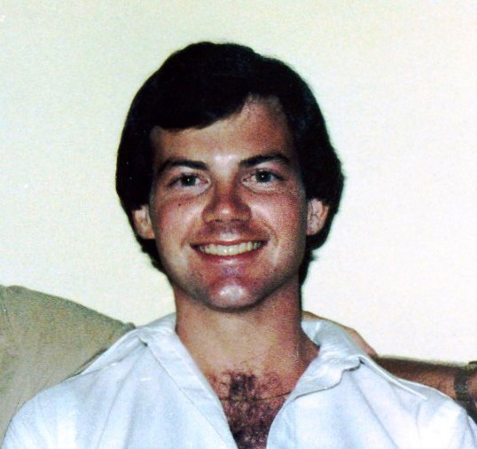
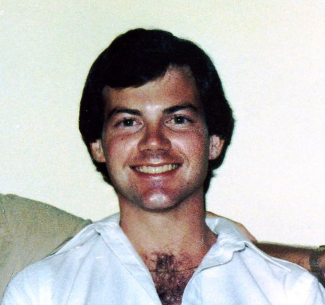

Glenn Matthew RYCE
(1956-1995)
") ") ")
Glenn Matthew RYCE (1956-1995) |
Glenn Matthew RYCE
NOTES: A kind man with an adventurous spirit who enjoyed traveling and spending time with good friends
-- Florida Death Index (1877-1998) |
|

Glenn Matthew RYCE (1956-1995) |
Glenn Matthew RYCE
NOTES: A kind man with an adventurous spirit who enjoyed traveling and spending time with good friends
-- Florida Death Index (1877-1998) |
Home | Main Page | Surnames | Name List
Website updated 2024 using Legacy 9.0, a division of MyHeritage.com; content copyrighted and maintained by MillerSomers@gmail.com
 General Notes:
General Notes: